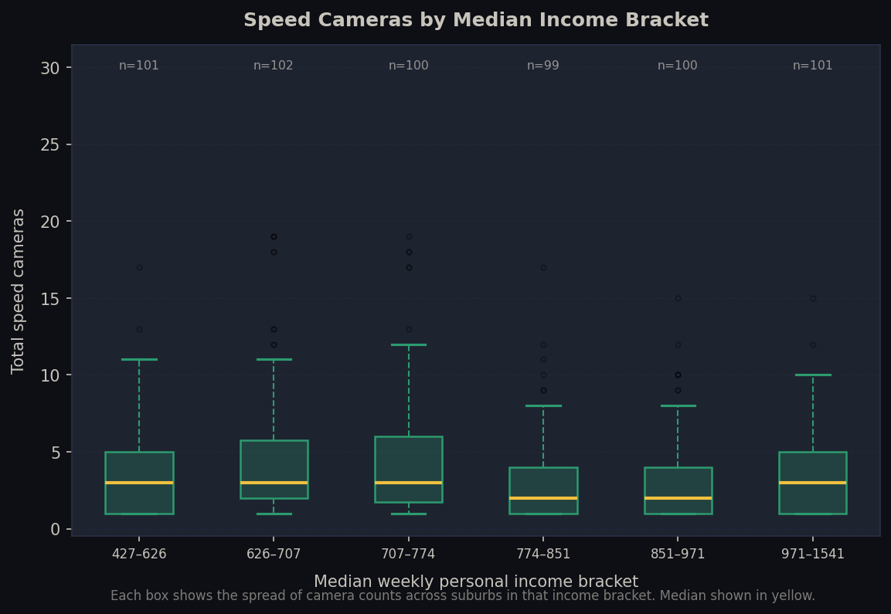
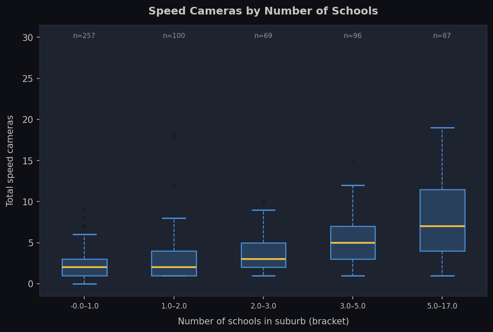
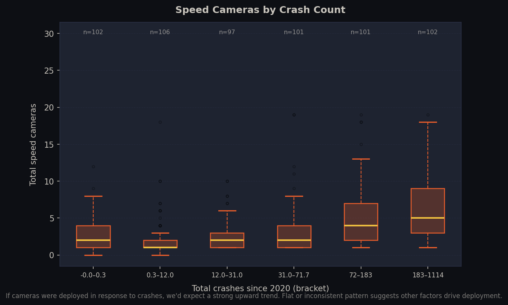
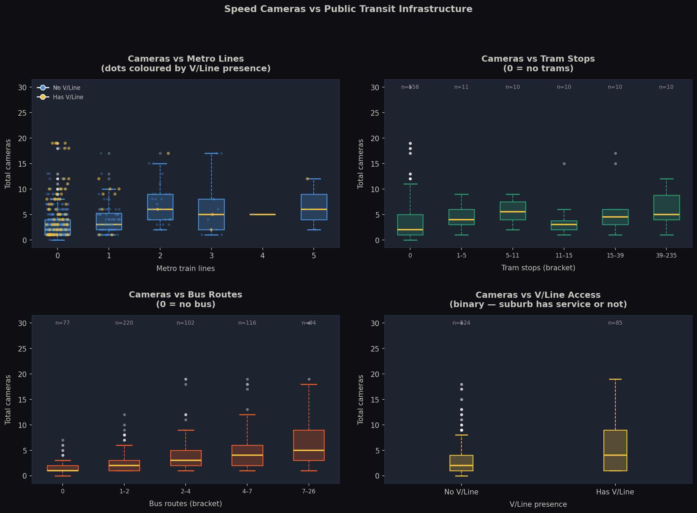
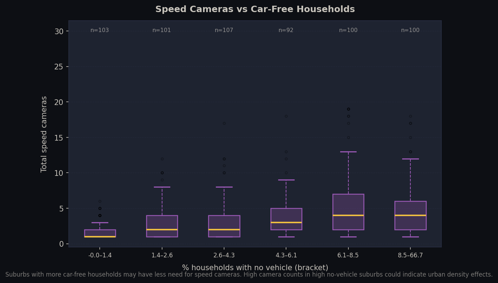
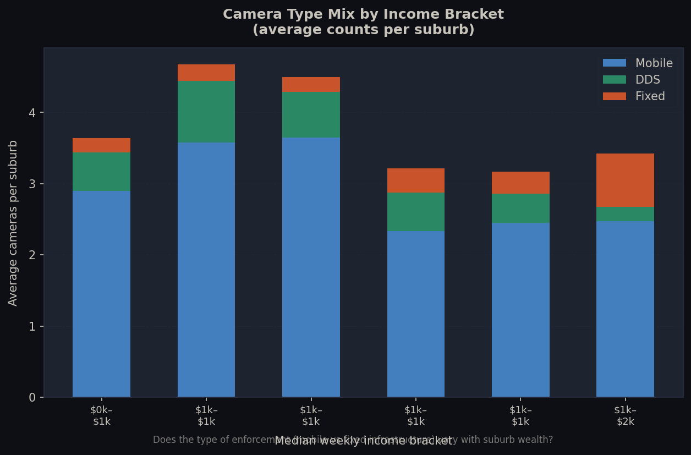
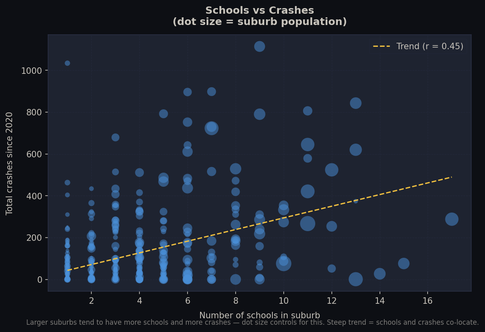
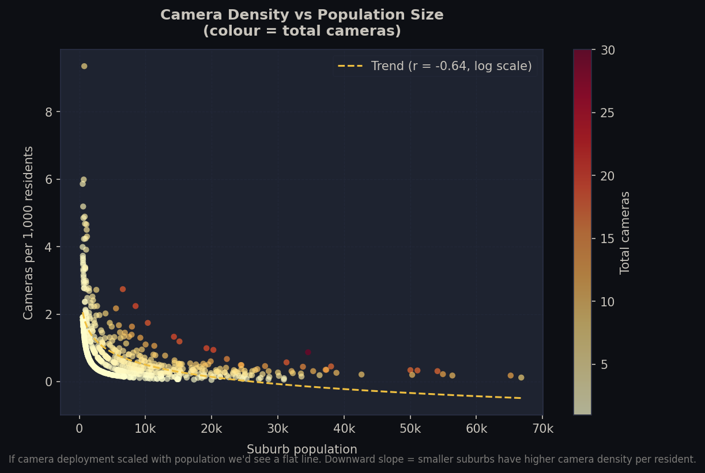

A series of charts exploring the relationship between speed camera deployment and suburb characteristics — income, schools, crashes, transit access, and more. Data from Vic Gov open data and ABS 2021 Census.







